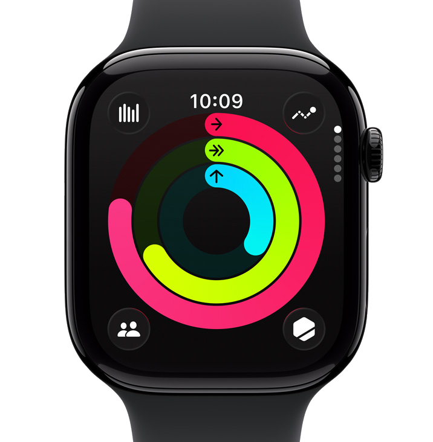
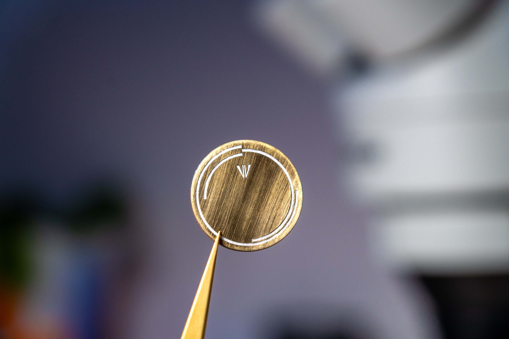
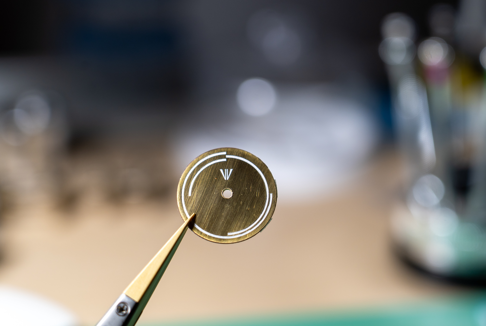
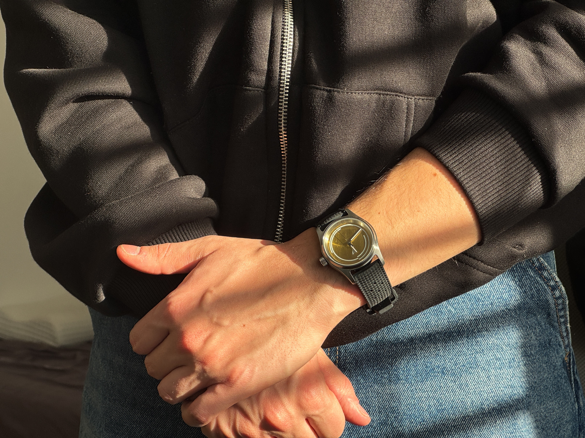
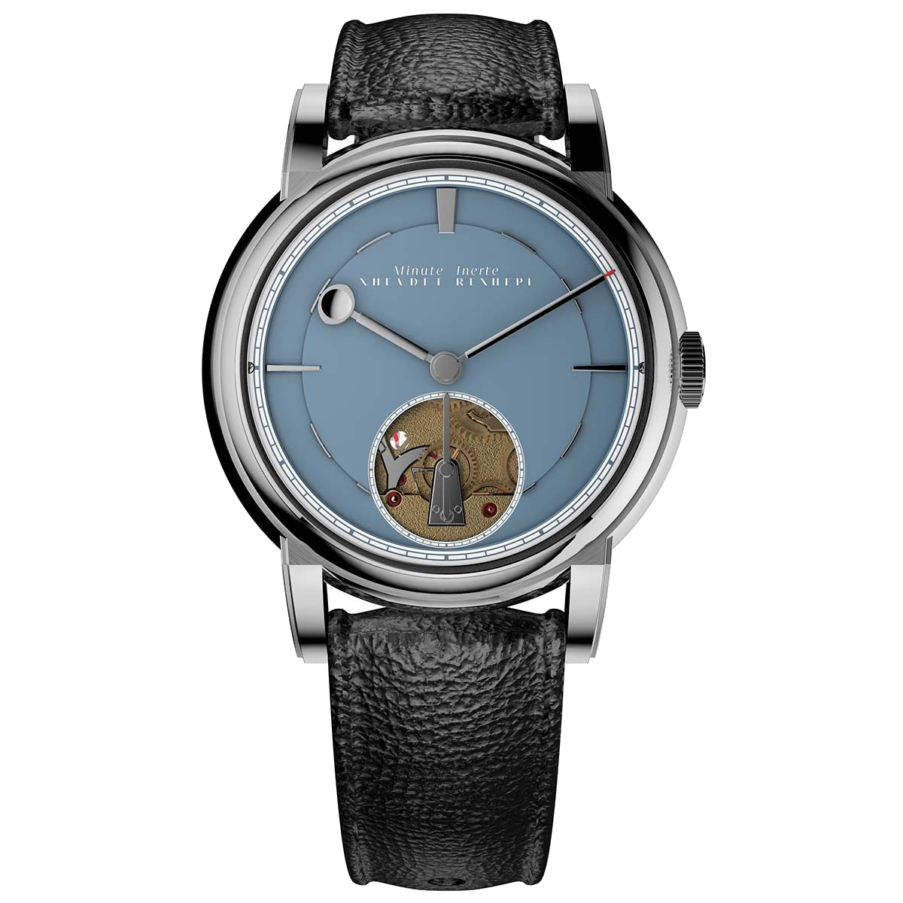
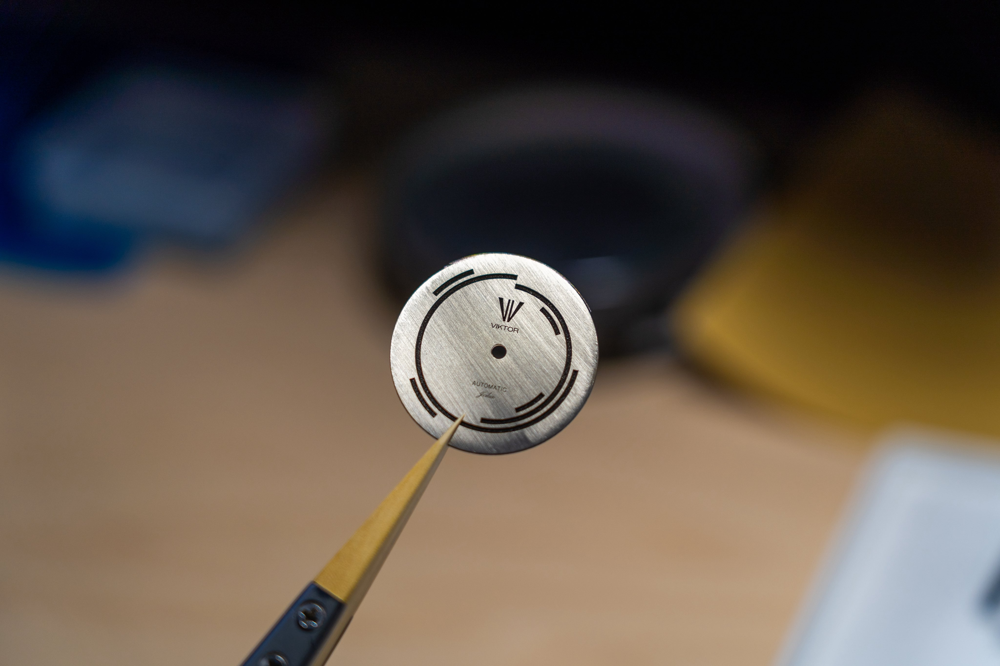
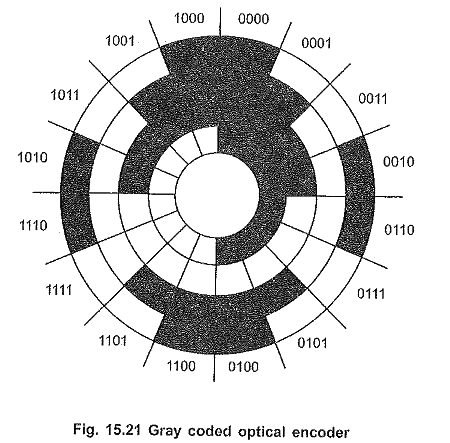
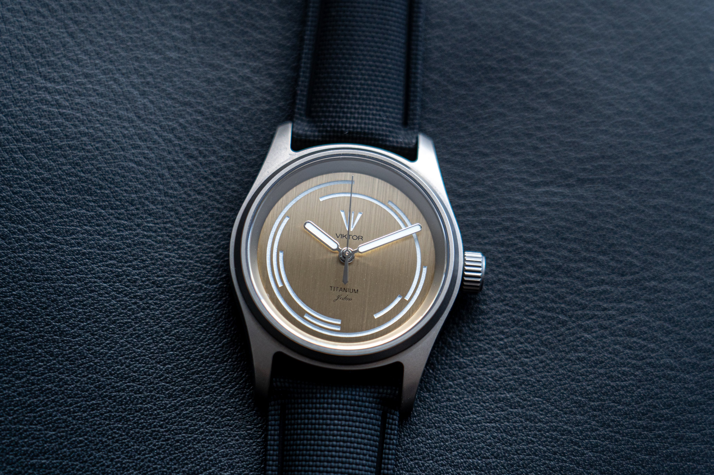

My main inspiration came from perhaps the least romantic source imaginable: a simple, fugly Apple Watch.
I made many previous dial designs, but it was not until the Apple Watch exercise rings lined up one day in a perfect hour-marker orientation that the idea really clicked. For people who do not know what the three rings on an Apple Watch are, they track Move, which is calories; Exercise, which is minutes; and Stand, which is also minutes.

It was a complete coincidence that those rings lined up perfectly as a 3-hour, 6-hour, and 9-hour marker. It felt like a revelation for my watch design.
And that is how the first Viktor Watch dial came to be: a very simple, almost empty-looking dial, with hour markers at 3, 6, 9, and 12 o'clock.

At that point, I still had no mill, so the only way I could add a hole to the dial was with a dremel tool, and to say that it’s ugly, is an understatement, but a fair handheld attempt. But even so, the very first Viktor Watch was born.

If I remember correctly, I assembled the watch somewhere around September 2025., and it wasn’t until November that years somebody else saw it, here you can see my friend wearing it for the first time:

Looking back, I can’t believe how much time it took me to make additional hour markers, the thought never really crossed my mind, because it made little sense to me. And it wasn’t until I took a look at my favourite watch again, Xhevdet Rexhepi’s Minute Inerte that I realised that I could use short little rings to show “more time”, more precisely…

So I tried adding four additional loops to show the hours more clearly, placing them around the dial like this:
- 2 and 3 o'clock
- 4 and 5 o'clock
- 7 and 8 o'clock
- 10 and 11 o'clock
Ultimately, I thought the dial was pretty ugly. Making the hour-marker loops thicker was very ugly too, so I played around with sizes, shapes, and length for a very, very long time.

After all that effort, and trying to figure out how to position the extra loops, the results were pretty disappointing, of course the whole process was shared on X, and it was actually one of my followers that said my dial reminds them of an optical encoder (His name was Viktor btw, how crazy is that).

At the time, I had absolutely no idea what an optical encoder was. But after looking it up, I came across an image that completely changed the way I thought about the design. Until then, I had been limiting my “extra loops” to a single “1-hour-segments” of the dial. Seeing how encoder disks used multiple concentric tracks made me realize that I could simply span the loops across multiple “hour-marks”, and that’s how the final idea was born.

After a lot of drawing, experimenting, and more failed attempts than I can count, I finally landed on a dial design that felt right and balanced. It would go on to become the backbone of Viktor watches :)